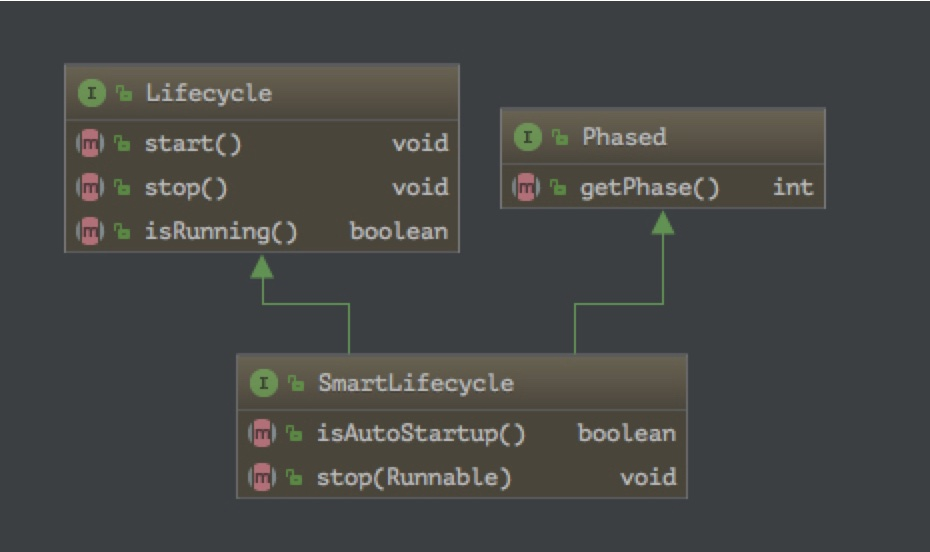

1、前言
利用Spring的扩展接口，来定制bean。
2、BeanFactoryPostProcessor
BFPP是针对BeanDefinition而言的，在bean实例化之前进行调用。注意此时是针对BeanDefinition做修改，bean还没有实例化。可以用来对属性进行覆盖。
发生的时机是在bean进行实例化之前
1 | public interface BeanFactoryPostProcessor { |
使用举例，在postProcessBeanFactory方法中：
1 | BeanDefinition beanDefinition = beanFactory.getBeanDefinition("myBean"); |
2.1 常见BFPP
2.1.1 PropertyPlaceholderConfigurer
实现了BFPP和Aware，可以在XML配置文件中将关键属性使用${name}占位符，而把真实值抽到一个properties文件中。目前springboot应用中还没用到过这个功能….
2.1.2 PropertyOverrideConfigurer
和PropertyPlaceholderConfigurer的区别就是，可以在XML配置文件中设置初始值，如果properties文件中也有相应的值，则覆盖，没有则使用XML中配置的值。目前springboot应用中也是还没用到过这个功能….
3、Aware
直译即为感知点，标记接口，实现该接口的类会通过回调得到Spring容器的某种通知，通过通知获得资源，有了资源就即可进行某些操作
发生Aware回调通知的时机是在bean进行实例化之后
3.1 常见Aware
3.1.1 ApplicationContextAware
1 | public interface ApplicationContextAware extends Aware { |
这个Aware最大的作用就是可以拿到容器上下文，注意如果是springboot构建应用，会进行推断当前应该是用什么上下文，非web应用一般是AnnotationConfigApplicationContext。
拿到ApplicationContext实例之后，就可以自由发挥很多功能了。
3.1.2 ApplicationEventPublisherAware
1 | public interface ApplicationEventPublisherAware extends Aware { |
可以让实现类通过setApplicationEventPublisher方法获取到事件发布器实例ApplicationEventPublisher，调用ApplicationEventPublisher#publishEvent进行事件发布。
例如：
1 |
|
3.1.3 BeanNameAware
1 | public interface BeanNameAware extends Aware { |
让bean获取到自己的名字
3.1.4 EnvironmentAware
1 | public interface EnvironmentAware extends Aware { |
获取到Environment实例，举例：
1 | public class MyEnvironmentAware implements EnvironmentAware { |
可以获取到aplication.properties中配置的属性
4、BeanPostProcessor
每一个bean在初始化前后都会调用到BPP的after和before方法。实现这个接口的类要特别注意，容器中每一个bean在初始化前后都会回调到实现类的postProcessBeforeInitialization和postProcessAfterInitialization方法
调用BPP的时候，bean已经实例化，并且注入过属性了
1 | public interface BeanPostProcessor { |
4.1 常见BPP
4.1.1 ApplicationContextAwareProcessor
这个类的作用是对实现了某些Aware接口的bean，注入需要的上下文或者环境，见代码：
1 | // ApplicationContextAwareProcessor#invokeAwareInterfaces |
4.1.2 AutowiredAnnotationBeanPostProcessor
这个BPP是用来处理 @Autowired、@Value注解的实现，如果当前bean有这些注解，则会进行相应的注入处理
4.1.3 RequiredAnnotationBeanPostProcessor
看名字就知道是处理@Required注解的。
类似用来处理特定注解的BPP还有，就不一一写出了
4.1.4 AbstractAutoProxyCreator
这个BPP是用来给bean生成代理的，默认是不会注册到容器。假设springboot配置了aop-starter，那会自动装配到容器中
1 |
|
5、InitializingBean & DisposableBean
5.1 InitializingBean
在完成了Aware和BPP的后置处理之后，如果bean实现了InitializingBean，则会调用afterPropertiesSet()方法，进一步调整当前bean的状态
1 | public interface InitializingBean { |
要达到相同的效果，可以使用@PostConstruct注解，例如：
1 | public class ExampleBean { |
官方文档建议使用注解的形式，而不是实现InitializingBean接口
5.2 DisposableBean
如果bean实现了DisposableBean接口，那么在该bean实例销毁的时候，会回调destroy方法
1 | public interface DisposableBean { |
同样的要达到相同的效果，也有注解可以用，@PreDestroy 例如：
1 | public class ExampleBean { |
同样的，官方文档建议使用注解的形式，而不是实现DisposableBean接口
5.3 SmartInitializingSingleton
实现这个接口的bean，会在容器所有单例作用域的bean初始化结束后回调afterSingletonsInstantiated方法
1 | public interface SmartInitializingSingleton { |
6、LifeCycle
1 | public interface Lifecycle { |
Lifecycle接口提供了一些方法在容器启动和关闭的时候进行调用，比如一些后台执行的任务可以使用该接口。注意两点：一是在执行start和stop之前会先判断isRunning的返回，根据返回来决定是否调用start(false时调用)或stop(true时调用)方法；二是Lifecycle接口不会自动随着容器启动关闭自动进行相应方法的回调。
6.1 常见LifeCycle
6.1.1 SmartLifecycle
SmartLifecycle可以完成自动注册，随着容器启动可以自动开始进行相应判断进行回调。
1 |
|
其随着容器启动和关闭的方法回调顺序如下，注意到并没有回调到stop()方法，而是stop(Runnable callback)方法。同时再注意一点，stop(Runnable callback)方法中，可以根据需要使用多线程来进行相关回收工作，但是一定要调用callback.run()方法，同时，如果超时30s还没有调用，会强制认为已经完成了stop工作。详情见官方文档。
6.1.2 LifecycleProcessor
与其说它是Lifecycle，不如说它是所有Lifecycle bean的处理器
1 | public interface LifecycleProcessor extends Lifecycle { |
看方法名可知，该接口主要提供两个回调，一个是上下文刷新，一个是上下文关闭时的回调
在Spring中仅有一个实现类：生命周期处理器-DefaultLifecycleProcessor，重点看两个方法：
1 | public class DefaultLifecycleProcessor implements LifecycleProcessor, BeanFactoryAware { |
方法上的java doc很重要，可以看一下。比如上下文刷新的时候onRefresh()方法，其中的startBeans方法中会对我们容器中的所有LifeCycle bean进行回调，比方6.1.1小节当中的MyLifeCycle bean的start方法回调即是在此处由DefaultLifecycleProcessor回调的，它即是管理LifeCycle bean生命周期的bean
7、运行顺序
扩展点的运行顺序，可以参考如下两幅图：
- 《Spring 实战 4》1.2.2 小节，bean的生命周期
- 《Spring 5 高级编程(第五版)》4.2小节，管理bean生命周期
8、参考链接
http://fangjian0423.github.io/2017/06/24/spring-embedded-bean-post-processor/
https://blog.csdn.net/boling_cavalry/article/details/82051356